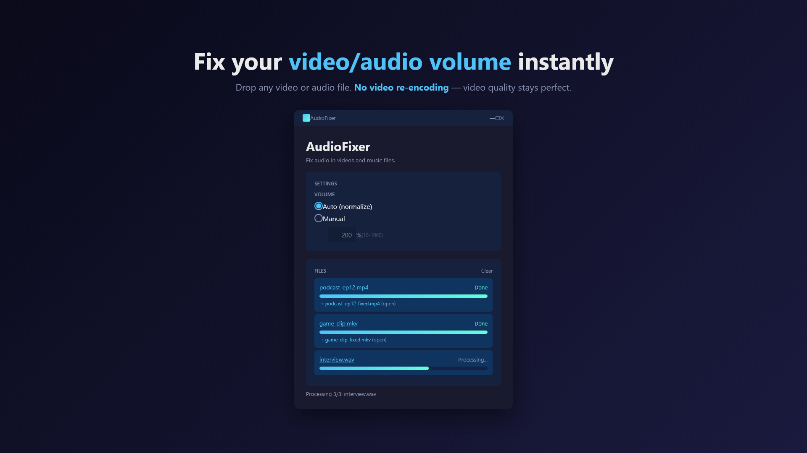
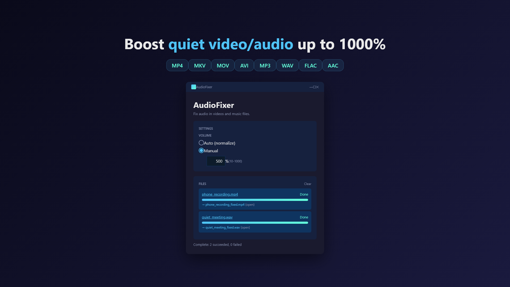

Fix your video volume.
Without re-encoding.
Drag any video in.
Normalize or boost the audio. Video quality stays perfect.

Sound familiar?
- You recorded a video and the audio is way too quiet — but raising the volume in a video editor means re-encoding (and quality loss).
- You exported a video that sounds fine on your laptop but is inaudible on phones.
- Your screen recordings, lecture videos, or interviews have inconsistent volume levels.
- You want a one-click fix without learning FFmpeg or installing 200 MB of video editing software.
AudioFixer fixes audio in seconds without touching the video stream. No quality loss. No editor required.
What it does
Match any video to a target loudness automatically. EBU R128 standard.
Set a custom volume multiplier from 50% to 1000%.
Only the audio track is re-encoded. Video stream is copied bit-for-bit.
Drop multiple files at once. Batch processing supported.
No uploads. Files never leave your device. No tracking.
Most videos finish in seconds — no full re-render needed.
Supported formats
Powered by FFmpeg (LGPL). Audio is re-encoded with the original codec where possible.
How it works
1Drop your file
Drag a video or audio file into the AudioFixer window, or use the file picker.
2Choose Auto or Manual
Auto: AudioFixer analyses the loudness and brings it to a standard level. Best for fixing quiet videos.
Manual: Set the boost percentage yourself, from -3dB to +20dB (50% to 1000%).
3Process
Output is saved next to the original file with _fixed suffix. Original file is never modified.

Pricing
via Microsoft Store
▶ Get AudioFixer on Microsoft Store
FAQ
Does AudioFixer re-encode the video?
No. Only the audio stream is processed. The video stream is copied bit-for-bit, so visual quality is identical to the source.
Will it work for very long videos (1 hour+)?
Yes. Because the video isn't re-rendered, processing time is bound by audio length and disk speed — usually a few seconds even for hour-long videos.
Does it upload my files anywhere?
No. AudioFixer runs entirely on your device. There's no server, no analytics, no telemetry. The only network communication is Microsoft Store license verification handled by Windows itself.
Does it work for audio-only files (MP3, WAV)?
Yes. AudioFixer handles audio-only files the same way. Useful for normalizing podcast recordings, voice memos, or music files.
Can I batch-process multiple files?
Yes. Drop multiple files at once and AudioFixer queues them.
What loudness standard is "Auto"?
EBU R128 with -16 LUFS integrated loudness target — the same target used by Spotify, YouTube, and most streaming platforms.
Credits & Open Source
AudioFixer ships with the following open-source components:
- FFmpeg — audio processing engine. Licensed under the GNU Lesser General Public License v3. Built without GPL-only components (no libx264, libx265, libxvid, etc.). Source: ffmpeg.org/download.html. License text is bundled with the app as
tools/FFMPEG_LICENSE.txt. - .NET 8 (MIT) and Windows App SDK (MIT) by Microsoft.
If you would like to replace the bundled FFmpeg with your own LGPL-compatible build, drop a compatible ffmpeg.exe into the app's tools/ directory.
More from sakuradev